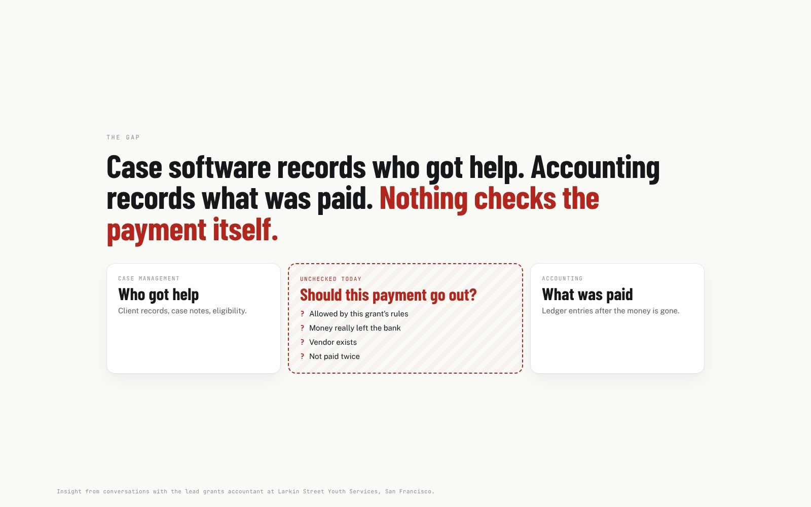
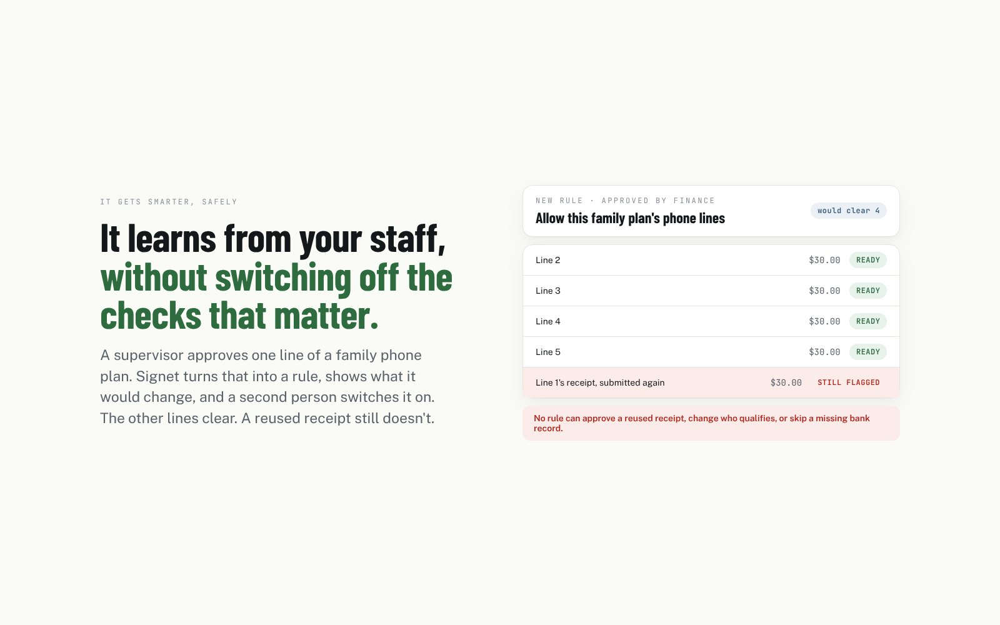

Larkin Street Youth Services is San Francisco’s largest nonprofit provider of housing for young people experiencing homelessness. It runs on about $33M a year, roughly two-thirds of it from government grants, and every grant has its own rules about who qualifies, how much, and for what. Talking with their lead grants accountant made the gap obvious: case software records who got help, accounting records what was paid, and nothing checks the payment itself. Mistakes surface at audit, months later, and the money gets paid back from funds meant for other people.
Solo, over one hackathon weekend: the research and interviews, the product design, the full-stack build, the five integrations, the pitch, the slides, an investor memo and the demo video, then the deployment to my own domain.
Claude turns a receipt or bill into who, how much and when, with a confidence for each field. Below 80% confidence, a person looks.
Deterministic engines check the grant’s rules, whether the money really left the bank (Capital One Nessie), the vendor’s identity (CRS), its public footprint (Bright Data) and how similar cases were handled (Moss). Same request, same answer.
The system can only say Ready or Escalated. One person certifies a batch; a different person releases it, enforced in code. Every step lands in a hash-chained audit log.
When a supervisor approves something unusual, Claude drafts a rule from their own words, replay shows exactly what it would change, and a second person switches it on. No rule can approve a reused receipt, change who qualifies or skip a missing bank record.

The gap it closes
Learning with a floor nobody can lowerThe agency, clients and documents in the demo are fictional; the API calls are real, against sandboxes. No Larkin Street data was used.